Grass Roots Golf | Buhl Park
October 18, 2024
I spent last week sleeping on my friend Nick's couch.
During this 'trying to figure it out' period I often focus on whats next vs being where I am. Reminiscing with Nick those nights helped me enjoy the moment.
We were roommates freshman year at OSU, friends through out high school, and even went to the same grade school.
I transferred to St Columban a couple months into 2nd grade. It allowed me to play the game of learning peoples names for the second time in a few short months. Everyone knows I'm the new guy so in a world of identical school uniforms I did my best to work with sports teams, sweatshirts, and backpacks to catch up to speed. Nick made it easy.
We took timed math tests a few times a week - those where you try to solve 50 + problems in a minute.
The page started face down and once we were told, "go," it was off to the races. With high tension and a beating heart, I slid my shoes off my feet. Somewhere in first grade I guess I learned that breathing feet helps timed test performance.
Once the 60 seconds were over, the late Mrs Finn would shout "Why are your shoes off? Why are your shoes off? Why do you two take your shoes off!"
I couldn't see under the desks but looking around the room by the looks of others, the other guilty culprit had a name tag on his desk that read, "Nick."
Nick. He also takes his shoes off during timed tests. He must be chill.
After a solid day looping at Scioto CC, Nick and I watched Wes Anderson's Isle of The Dogs and eventually parted ways. I don't usually gravitate towards YouTube but I happened to click on the app.
Josh Mayer's golf channel caught my eyes. He's a content creator and filmed a video at Buhl Park Golf Course in Pennsylvania. The name rang a bell. Tom Coyne wrote about it in his book A Course Called America.
Buhl Park is technically the only "free" golf course in the country. Frank Buhl, a wealthy magnate, donated money and land to the city of Sharon, PA a century ago. Buhl put in his will to maintain the course for the public. It has been free to play for over 110 years.
Hey? Maybe Buhl Park is the first track I could camp on?
The next day I decided to email Ryan Voisey, Director of Operations at Buhl Park, to share my ideas and ask if he would be open to someone camping on the course.
About an hour later, my impatient self had not received a response so I called the Park to ask them the question over the phone. I spoke with someone who said that they do not allow people to camp on the golf course.
Well, at least I called and asked - I thought to myself.
Shortly after I noticed I had a missed called and a voicemail from a PA phone number. It was Ryan. I quickly gave him a call back and we talked about the potential for camping on the golf course. I gave him a rundown on what I had done so far and general background on myself.
"So are you thinking about pitching a tent and building fires?"
"No, it would just be 7 x 3 feet of space for a tarp and sleeping pad."
"Ok gotcha. When are you thinking of coming out?"
"I'll be in Pittsburgh Saturday so I was thinking Sunday night."
"I'm not sure if you saw but we're supposed to be getting rain Sunday night."
I checked the clock. It was 3:30. Buhl Park was a 3 hour drive from Columbus. If I left now I would have a few minutes of day light to play.
"Could I come out tonight?"
"Yes."
After we finished the conversation, I immediately left the coffee shop and took off towards Sharon, Pennsylvania.
A lot of us find our way into the game through our fathers and grandfathers. There's a mystique that comes with the outfits along with the laughter that tends to precede and follow a round. The scorecard and pencil sitting on the table is more than a mere compilation of numbers in boxes. But rather proof of one's brief escape and attempt at perfection. Growing up I always wanted to fill in the boxes and understand what that meant.
However, sometimes their involvement can be a deterrent. The game could appear as boring, dragged out, and non-engaging. Because of this we can become fixated on the sports we already do play and can't imagine the possibility of not throwing on a certain uniform.
Tom Roskos, who initially shunned golf, found himself in the latter.
Growing up he played football, baseball, and basketball. He wanted nothing to do with the sport his Dad and Grandpa played every week. However, one day as a 13 year old he found himself at his local course - Buhl Park.
Before the era of tee time starters, a metal rack was used to indicate tee times, much like the ones that hold putt-putt balls. Players would drop their ball into the top of the rack, joining others waiting patiently below. When their ball reached the bottom, it signaled that it was their turn to tee off.
Roskos ball found the bottom of the rack and was transported to the first tee. He duffed the first ball and proceed to throw a dart in the middle of green. From that moment, he was hooked.
This lead him to a high school and college playing career. Following his college days he earned his PGA license where he competed across the region. Prior to the days of The Bryan Bros and Kyle Berkshire, Roskos traveled the country putting on elaborate trick shot shows and frequently competed in long drive competitions. His longest stretched out to a whopping 464 yards - this was 15 years ago.
One would have zero idea upon meeting him. His character, adorned in humility and sincerity, chooses to direct his attention to this growth of the community. Roskos's ethos has brought him back to his roots, and for the past decade, he has led the efforts at Buhl Park as Executive Director.
Upon pulling into the parking lot at the golf course, I dodged the kids riding bmx bikes and parked the car. I popped the trunk, grabbed my camera, and strapped the half set of clubs to the bottom of my pack. The sun dipped behind the trees, while the clouds held shades of orange and yellow, offering just enough light to play a few holes.
Ryan Voisey was joined by Tom Roskos in the parking lot. We introduced ourselves and reveled at the fact that this was happening. They gave me a rundown on the history of the property as well as the layout of the course. Roskos was joined by his two sons, Manny (12) and Nolan (10). They came up to me with a solid handshake and a friendly welcome to their course, showing the sincerity they picked up from their father.
We approached the first tee without having to pay a dime. Buhl Park could be the epitome of public golf. It's accessible, non restrictive, youth friendly, and most of all - inviting. Manny, Nolan, and I played the first two holes together while Ryan and Tom walked along side. It felt like I was playing with younger versions of myself.
Our flashlights were out the entirety of the 2nd hole yet somehow found every ball. After putting out on 2 green, I thanked them for the opportunity, and we parted ways. I played 3 and 4 with a headlamp strapped to my forehead and proceeded to search for a spot to lay down for the evening.
I set up camp (tarp, sleeping pad, sleeping bag) next to 7 green. Mummified in my sleeping bag, the symphony of nature took me on a trip. The shooting stars, the coyotes howling, and vesper of wind through the trees serves as background sights and sounds for the deep somatic experience. It's a fun game - bracing the crisp winds, watching the moon glide across the sky, and allowing what's been hidden within come to the surface.
As the sun rose and the morning dew glistened, I packed up my camp. I rolled some putts on 7 green before playing 8 + 9 on the way into the parking lot. Ryan was there cordially gifted me with Buhl Park merch.
I felt victorious. The sweatshirt and shirts served as trophies for this made up mission I've set myself on.
While the dream of massive gatherings and fires at golf courses became more alive - my mind focussed on the next cup of coffee and the impending weekend with the monks in Pittsburgh.
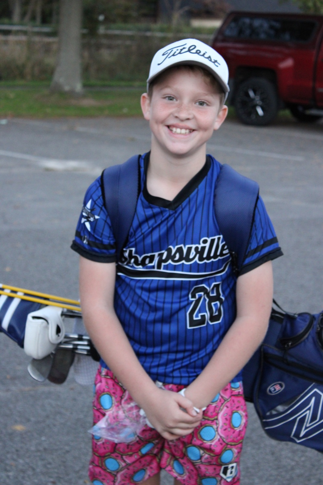
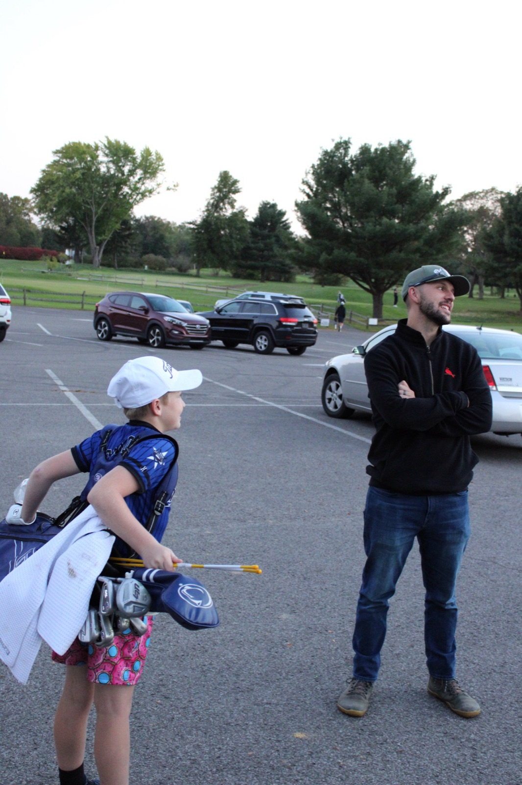
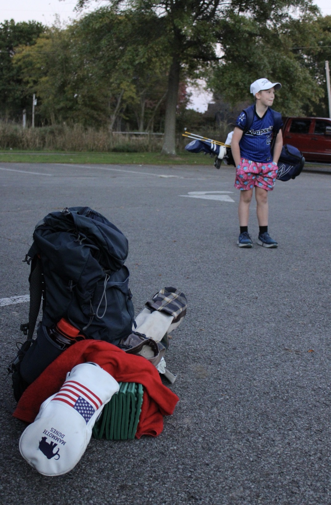
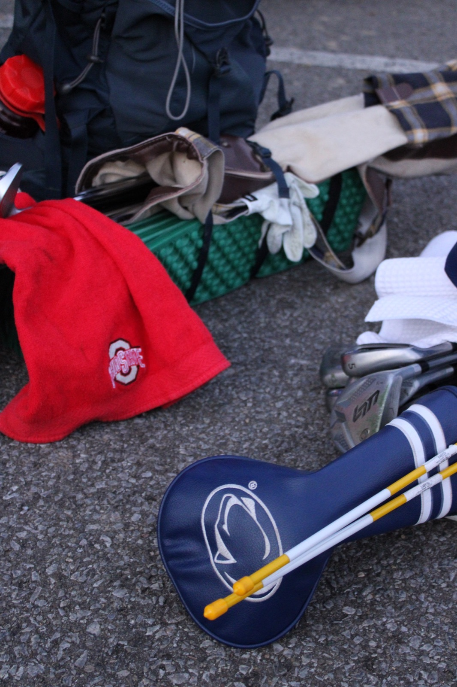
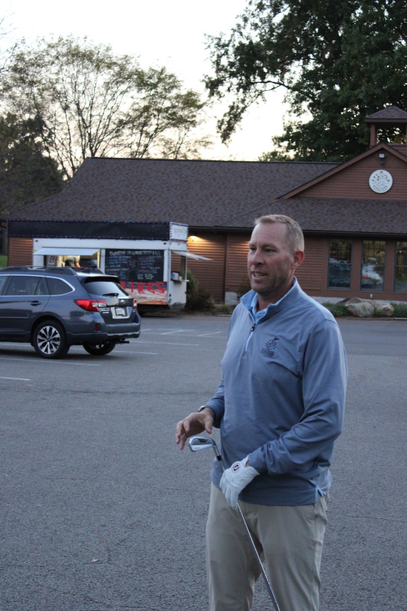
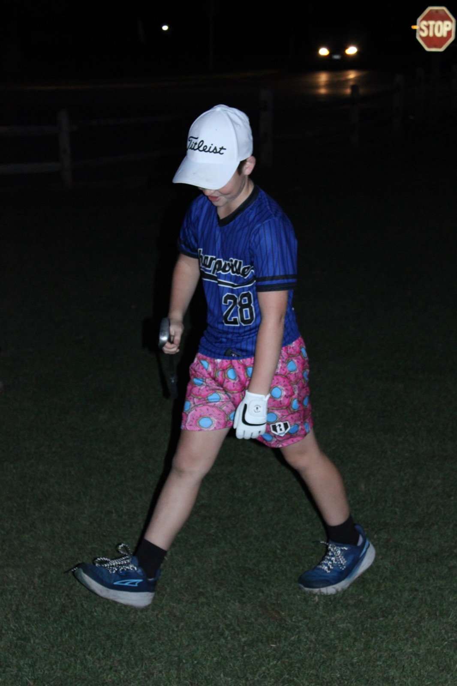
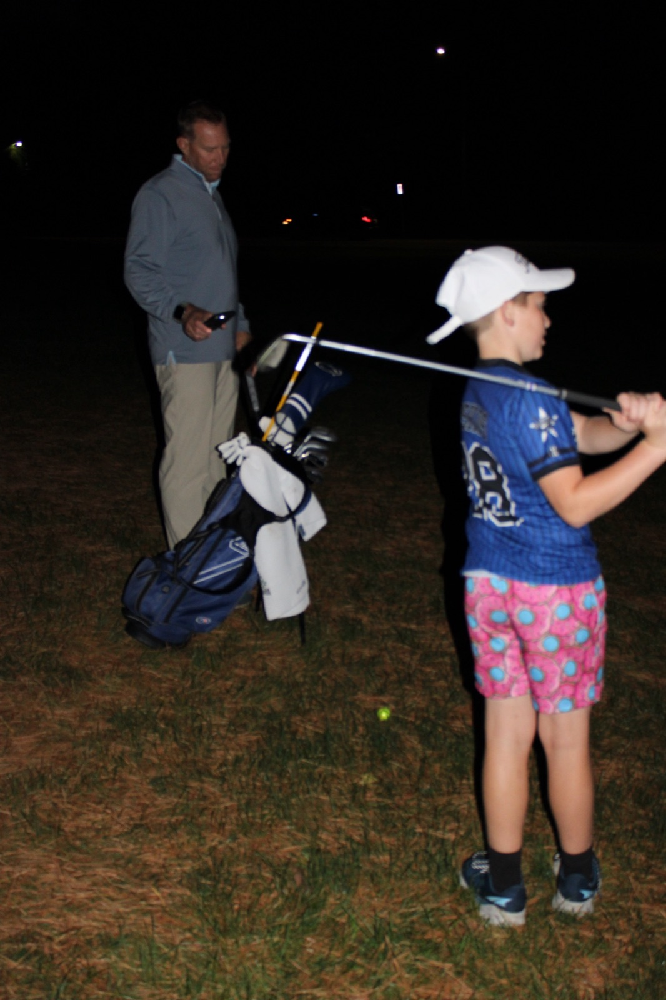
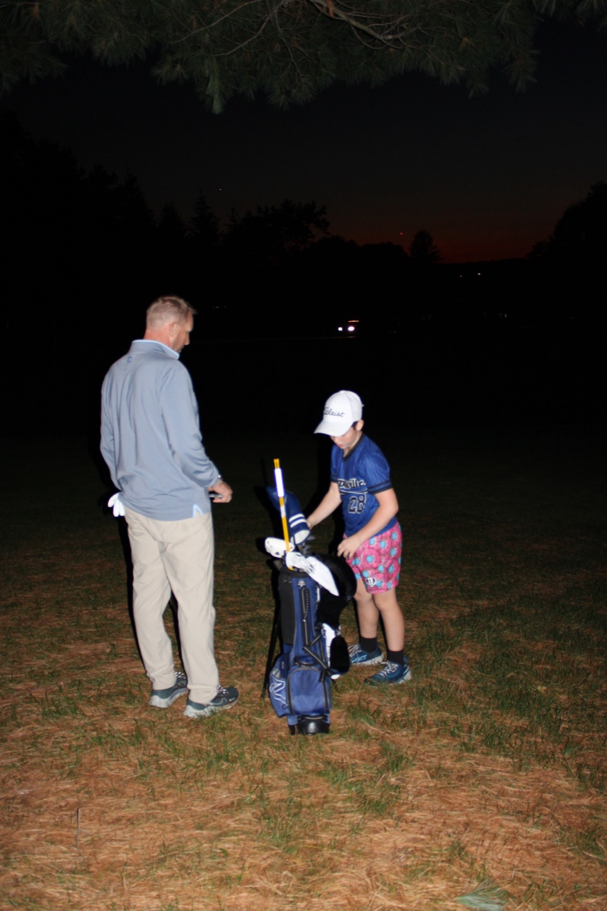
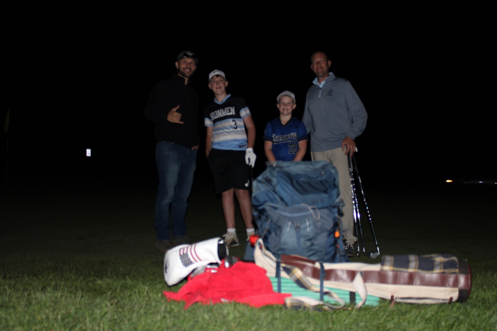
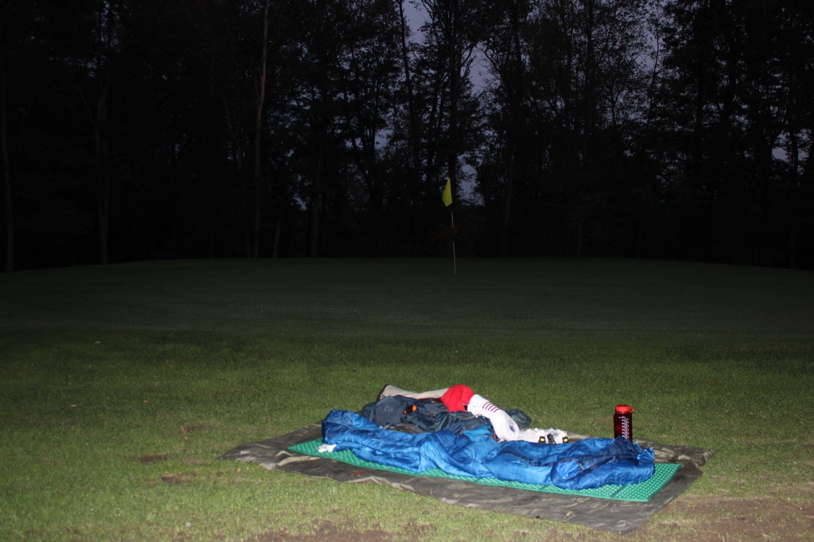
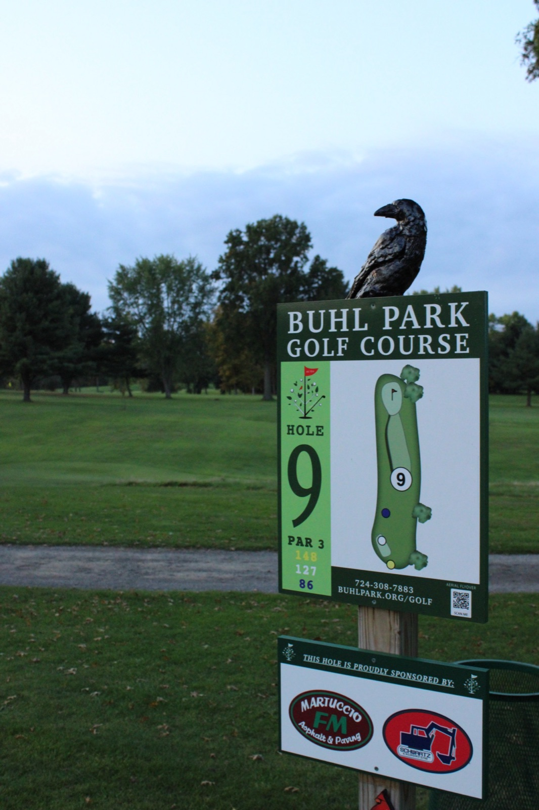
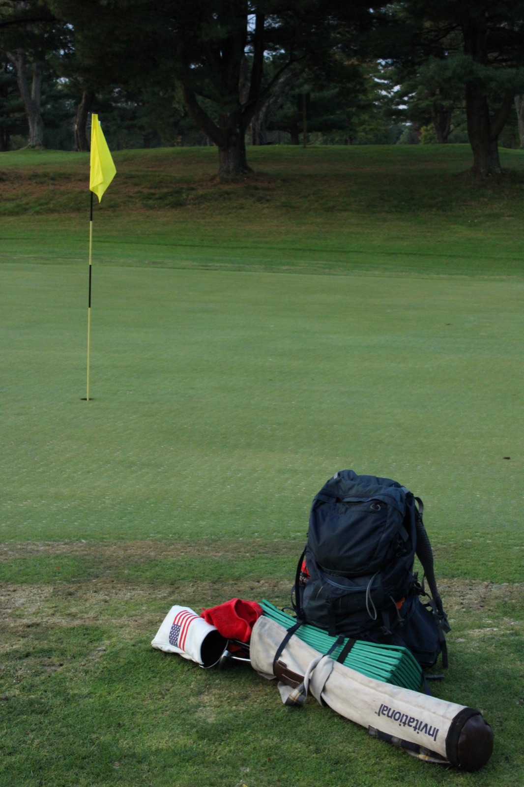
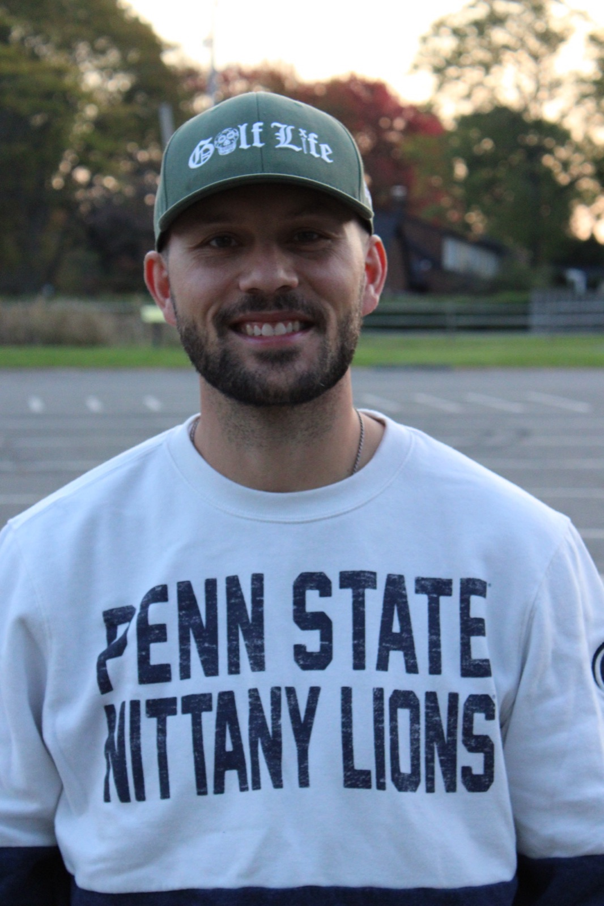